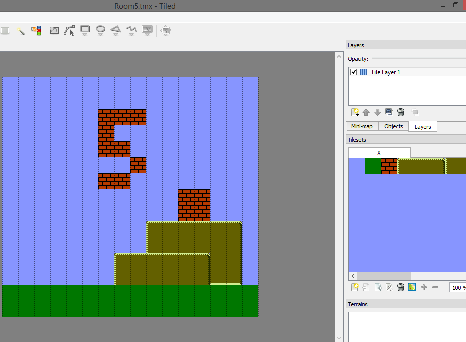

14、游戏平台
我们要做的是向右滚动显示。
游戏吸引人的地方在哪里呢？重力。
我们需要16bit来记录 X和Y 的速度和位置。低字节表示像素的位置。
我使用了有符号的 int值 (signed int 他的长度是2)
重力，每一帧给Y加一点速度，但不要太快，否则我们可能会落到地板以下，所以我们有一个最大的加速度。
我在.h文件中定义了这些物理变量。这样微调操作也会比较容易，这些都是 16bit的数值，低字节是子像素。最大加速度是2.25
#define ACCEL 0x20
#define GRAVITY 0x50
#define MAX_SPEED 0x240
#define JUMP_VEL -0x600
#define MAX_RIGHT 0xb000
我不希望所有的平台都是砖头，四面碰壁。我希望的是可以跳过平台，然后落在平台上，所以我定义了一个碰撞数组，并且定义了每个元数据的行为方式。
#define COL_DOWN 0x80
#define COL_ALL 0x40
const unsigned char is_solid[]={
0,
COL_DOWN,
COL_ALL+COL_DOWN,
COL_DOWN,
COL_DOWN,
COL_DOWN,
0,
0,
0,
0,
0,
0
};
我不得不手动编辑这些，有点尴尬。。。
背景碰撞代码解析碰撞位，并根据方向传送碰撞信号。如果Y速度为负值（往上跳），则忽略脚部的碰撞
if(BoxGuy1.vel_y > 0) {
BoxGuy1.vel_y = 0;
}
And only sets feet collisions if the feet are just barely inside the block.
(看不懂，自求多福了)
if((temp3 & 0x0f) > 3) collision_D = 0;
这就是为什么Y的速度不能大于每帧3个像素的原因。如果更快的速度，就会错过碰撞直接传过去了。
我用NES Screen Tool制作了一些新的图块，截图保存为metatiles.png，作为tileset导入到 Tiled Map地图编辑器中。
制作一些关卡，导出成csv文件，然后转换为C的数组，导入到代码中。

现在看起来像是个游戏了
https://github.com/nesdoug/17_Platformer